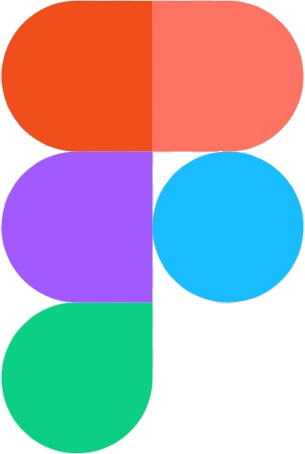

Nindya Fathul Risya
Bridging system reliability and application logic. With 2+ years of hands-on experience in IT operations, deployment pipelines, and database management, I bring a strong infrastructure mindset to software development. Equipped with practical skills in Python, Linux, and database operations, I am ready to build and scale robust backend systems.
Skills
Python
PostgreSQL
Linux
Grafana

Figma
Docker
Git